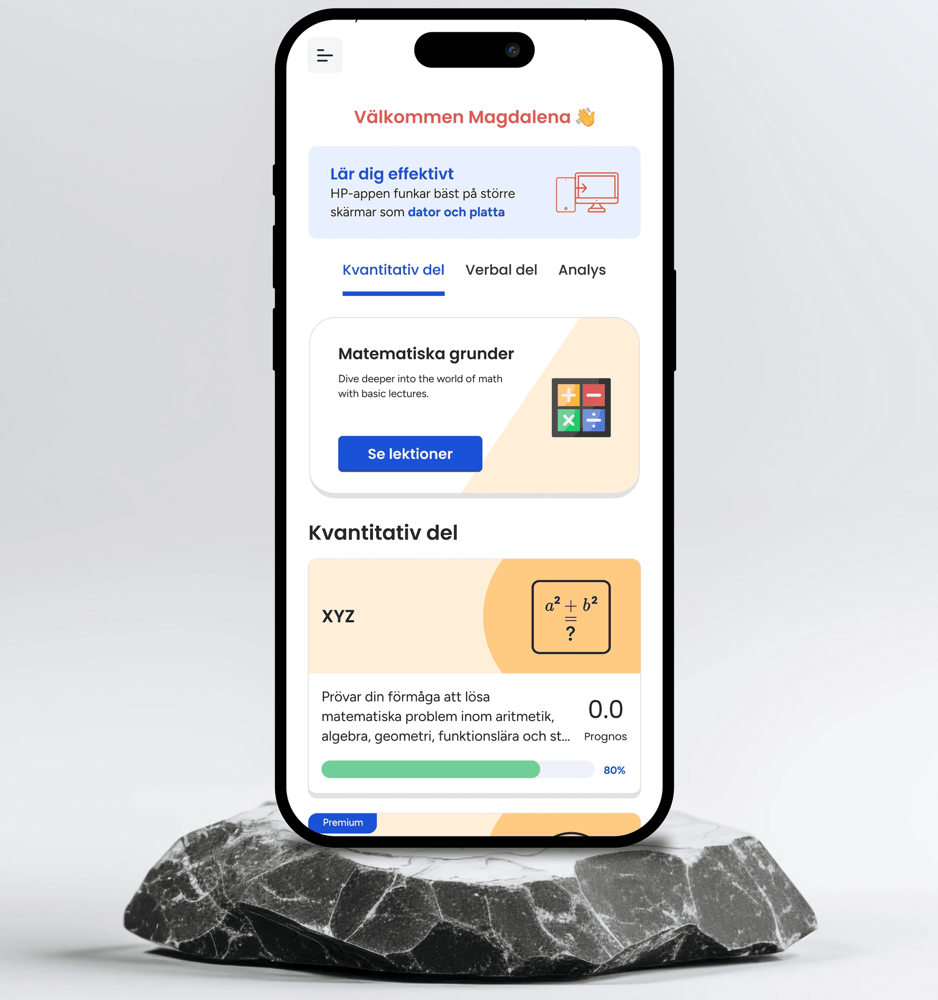
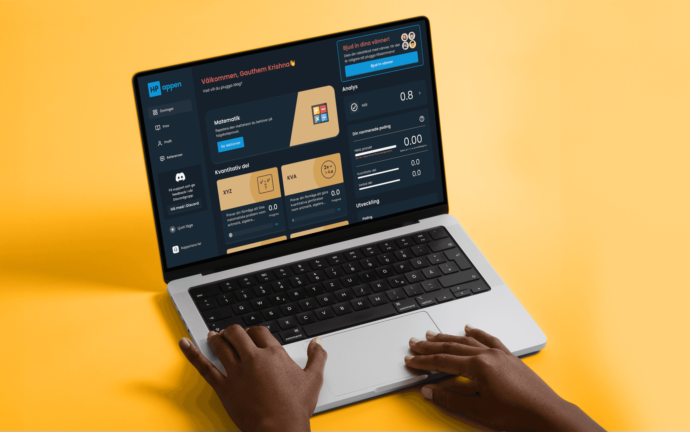
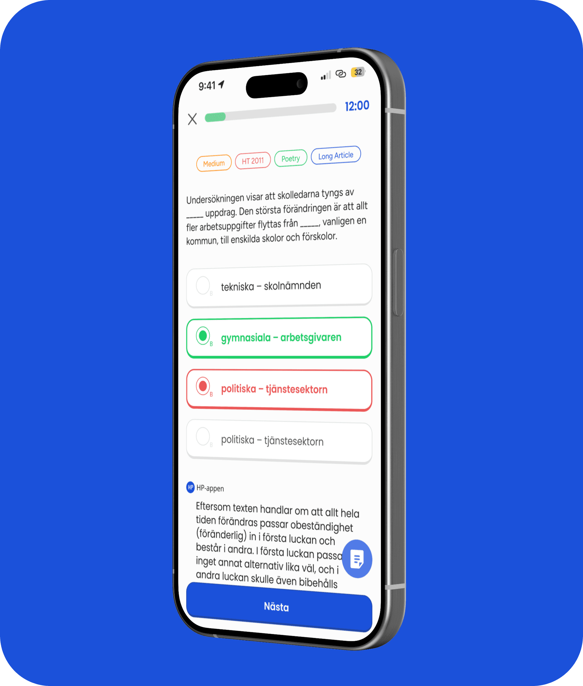

Overview
HP-appen is a digital platform designed to support students preparing for Sweden's högskoleprovet (university entrance exam). The app offers personalized practice, gamified learning experiences, and real-time progress tracking to boost motivation and performance. I led the design of both web and mobile interfaces, focusing on user research, intuitive UX, and data-driven improvements that helped grow the company from a new company to a leading market competitor in under a year.



Challenges
HP-appen entered a competitive market dominated by HPguiden, with no existing user base. The challenge was to create a highly usable, visually appealing platform that would attract and retain thousands of new learners, differentiating HP-appen clearly from competitors.
Research and Analysis:
- I applied Pirate Metrics (AARRR) and conducted a SWOT analysis to identify user pain points and market gaps because the platform needed clear differentiation and data-driven priorities.
- I organized and facilitated workshops that brought together both qualitative and quantitative insights because I wanted to validate assumptions quickly and build consensus on which features mattered most.
- To guide our design strategy, I mapped out user acquisition, activation, retention, referral, and revenue flows, ensuring the effort was focused where it would have the most business and user impact.
Persona Example
Name: Sara, 19
Profile: High school student preparing for högskoleprovet
Needs: Reliable revision platform, simple navigation, affordable premium content, on-the-go access, abundance of questions readily available.
User Problem Statement
I recognized from research that students like Sara struggled to find tools that balanced ease of use, accessibility, and high-quality content. Most alternatives were either visually cluttered or excluded learners with disabilities. I focused on designing for clarity, accessibility, and inclusivity to solve these issues and reduce user frustration
Design, Prototyping and Testing :
- Developed multiple UI prototypes aligned with a unified UX flow to explore and refine design directions early.
- Led usability testing sessions with real users (remote and in-person) to identify friction points and gather actionable feedback.
- Conducted A/B tests on CTAs, navigation, and onboarding flows, optimizing for click-through rates and retention.
- Partnered with developers for responsive, performance-optimized implementation.
AI Integration :
Leveraging AI-native tools like Figma MCP, Lovable and Claude accelerated prototype validation and insights extraction. AI-assisted handoff enhanced design fidelity and sped up front-end development, reducing revision cycles significantly.
Product Launch Support :
- Designed subscription flows and pricing tiers based on user segmentation and competitor research to maximize premium upgrades.
- Streamlined subscription UI featuring clear communication of value propositions, increasing upgrade rates while maintaining user trust.
- Supported launch strategies and post-launch iterations to ensure stable adoption and continuous improvement.
Accessibility and inclusivity focus :
- Enforced WCAG 2.1 AA compliance across all user flows with manual and automated accessibility testing.
- Focused on contrast, keyboard navigation, and simplified layouts to support users with visual and motor impairments.
- Developed features addressing dyslexia and other needs, earning positive user feedback for clarity and comfort.
Developer Collaboration & AI-Driven Handoff:
- Maintained close collaboration with frontend developers using AI-native tools (Figma MCP and Claude) to enhance design-to-code fidelity and reduce revision cycles.
- Generated reusable code snippets and debugged components directly in Figma handoffs, significantly improving team velocity and quality.
Results/Conclusion
- Took the platform from launch to market leadership within 6 months through strategic design initiatives and roadmap development.
- Increased seasonal revenue from zero to 1.7 million Swedish Kronor within one year while boosting conversion rates from 3% to 24% and significantly improving user retention by introducing innovative subscription models, AI-powered user flows, and tutor integration, and launching WCAG-compliant interfaces—all validated through Mixpanel, Stripe Dashboard, and Google Analytics.
- Reduced sprint cycles by more than 50% and accelerated design handover by leveraging AI tools—including Claude AI and Lovable—which streamlined front-end development.
- Worked closely with stakeholders to translate the vision into a market-leading product through strategic collaboration and alignment.
By combining rigorous research, AI-augmentation, and close team collaboration, I drove HP-appen’s transformation from an idea to a thriving, competitive learning platform, positioned as a genuine alternative to HPguiden. By accelerating design and development cycles with AI, I enabled faster shipping without sacrificing quality—showing how empathic design and cross-functional teamwork can deliver meaningful growth and user satisfaction.